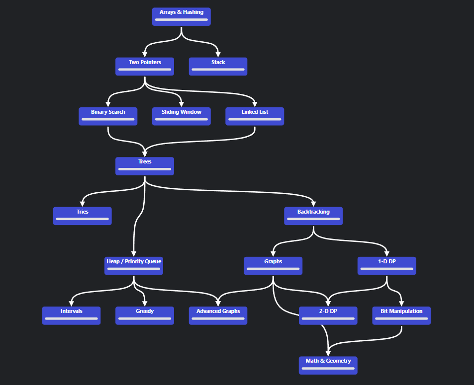

Coding Interview Diary
What's This?
This is a structured diary documenting my Coding Interview Preparation, following the proven NeetCode Roadmap methodology. Each topic and problem is analyzed systematically with detailed explanations and solutions.

What You'll Find Here
Each section includes comprehensive coverage:
- Topic Explanations - Core concepts and foundational algorithms
- Useful Methods - Essential functions and techniques for each pattern
- Problem Statements - Clear problem descriptions and requirements
- Initial Analysis - Deep-dive analysis before coding
- Python & Java Solutions - Multiple language implementations
- Complexity Analysis - Time and space complexity estimations
Why NeetCode?
NeetCode focuses on patterns rather than random problems. This approach:
- Builds systematic problem-solving skills
- Reduces randomness in interview prep
- Emphasizes reusable patterns across multiple problems
- Focuses on the most frequently asked interview topics
My Structured Approach
Problem-Solving Strategy
For each problem, I follow this Three-Step Process:
Step 1: Analyze First
- Identify problem type and constraints
- Think about edge cases
- Think about possible clarifying questions
Step 2: Naive to Optimal
- Walk through the naive solution
- Identify weaknesses
- Recognize the pattern
- Draft optimal solution
Step 3: Pure Problem Solving
- No hints, no solutions, no AI to implement the solution (checking sytax is fine)
- Implement the solution from scratch in around 10 minutes (easy), 30 minutes (medium), 60 minutes (hard)
- If I'm stuck after this time, gradually check hints and solutions
Last updated: May 2026